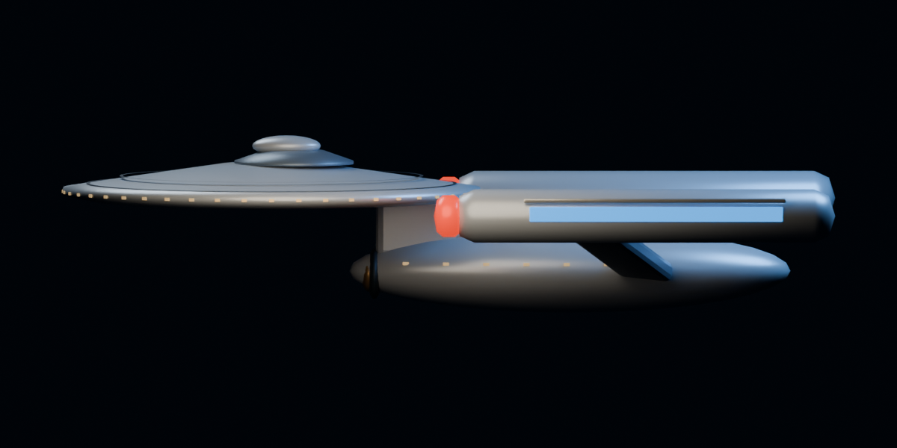
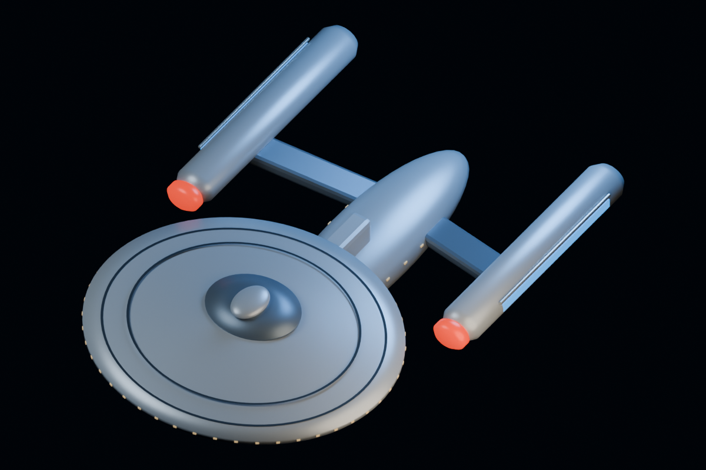
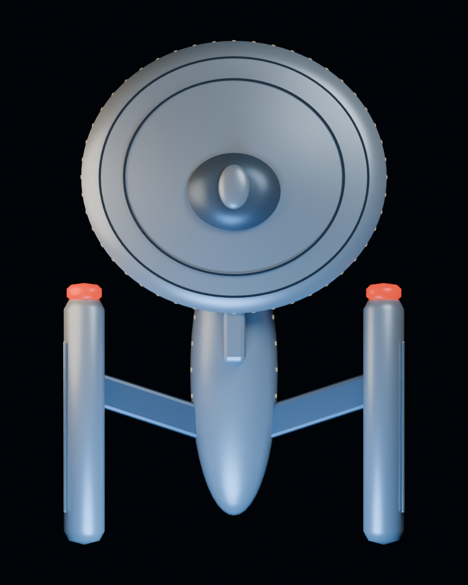
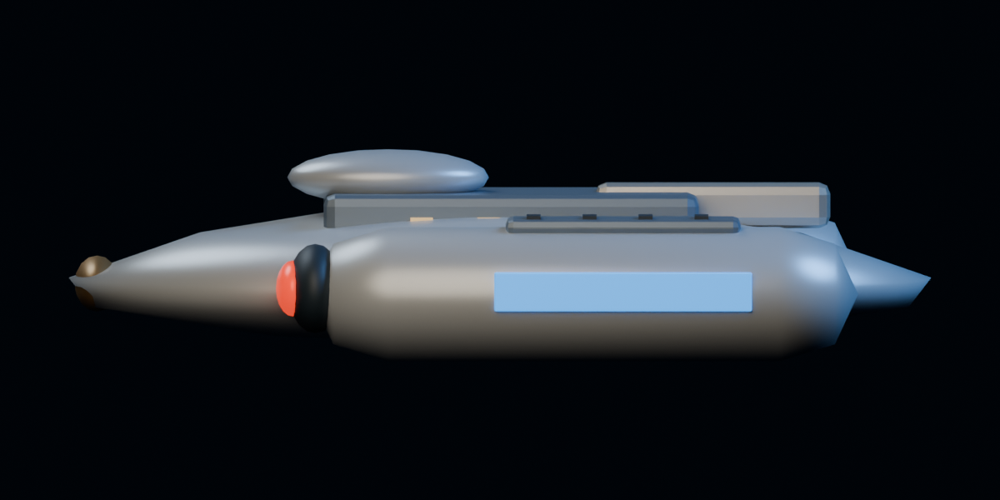
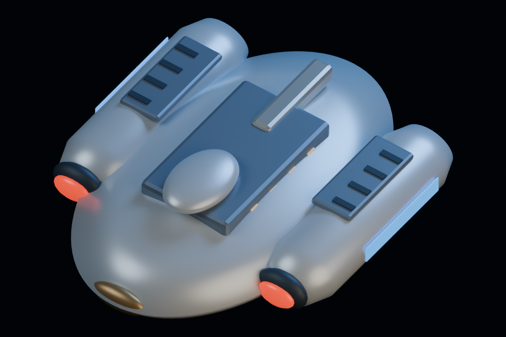
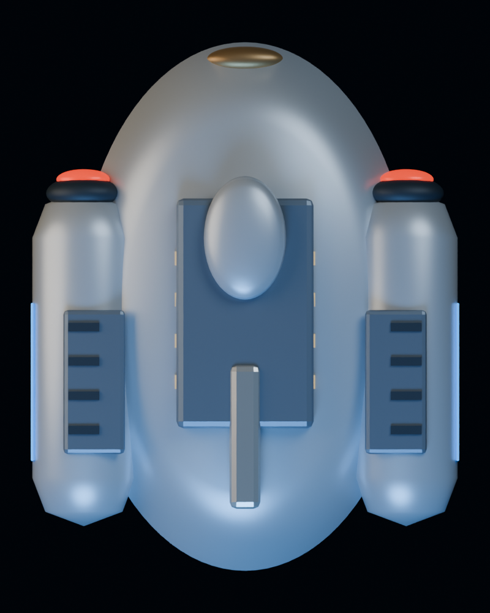

Actual new asset renders · Blender Cycles CPU / AgX. Proposed artwork; Unity import, URP appearance and owner visual acceptance remain open. Illustrative compositions are not campaign snapshots. Direct-light/top/side views expose surface and shape.





